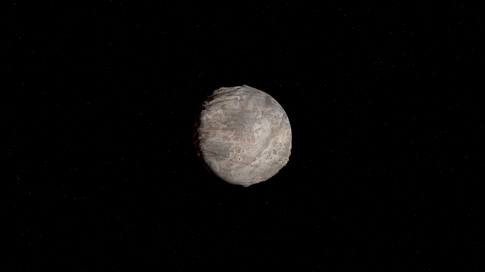

The Downgrade
Downgraded- Target
- D-07 · designation withheld
- Client
- Venture-backed prospecting team
- Study type
- Full characterisation
- Target period P
- 1.94 yr
The brief
A prospecting team was preparing a fundraising round on D-07, described in its deck as “a flying platinum mine”. The claim rested on a single meteorite analogue and an assumed metal-rich classification. The practice was asked to supply the resource statement the deck required.
What was done
Every archival observation was compiled and the near-infrared spectra re-reduced from the original frames. A new lightcurve gave a 7.9-hour rotation and an elongated body. The spectrum fit an ordinary stony class with a low albedo — inconsistent with a metal-rich surface. The “metal-rich” label traced back to a conference abstract that had never been peer-reviewed.
The outcome
The dossier recommended downgrading D-07 to scientifically ordinary and commercially unproven, and the practice declined to sign the resource statement. The team shelved the raise and commissioned a screening of six other targets instead — the cheapest money they never spent.

“A spectrum does not care about your pitch deck.”